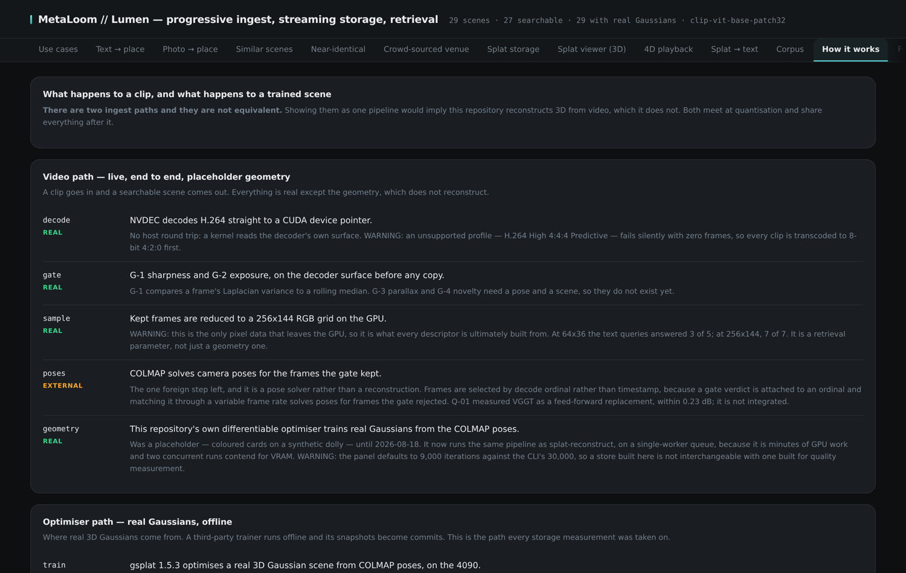

This page explains what happens between "here is a clip" and "here is a place you can search, orbit and merge further captures into". Nothing here requires operating the system; it is the mental model the rest of the documentation builds on.
From video to a scene
Decode and gate. Frames are decoded by the GPU’s hardware video engine directly into GPU memory — no round trip through the CPU. Before anything is copied further, a frame gate scores every frame for sharpness and exposure on the decoder’s own output surface. Blurred or badly exposed frames are rejected immediately. The gate is not cosmetic: everything downstream grows faster than linearly with frame count, and a bad frame that survives contributes wrong evidence to the pose solve — so a frame rejected early is worth many rejected late.
Pose recovery. The kept frames go through structure-from-motion, which recovers where the camera stood and how it was oriented for every frame, together with a sparse first sketch of the scene’s geometry.
Optimisation. A differentiable renderer then trains the scene: millions of anisotropic 3D Gaussian primitives are adjusted, step after step, until rendering them from the recovered camera poses reproduces the footage. A held-out set of frames is never trained on, so the reported reconstruction quality measures generalisation rather than memorisation. A typical scene trains in minutes on a single modern GPU and carries hundreds of thousands to millions of primitives.
Commit. The finished primitives are quantised into a compact fixed-size record and committed to the scene’s log in the store. Captures queue behind a single GPU worker — reconstruction is minutes of exclusive GPU work, so concurrent submissions wait rather than collide.

Decomposition
A capture of a real place mixes things that should not share a fate: the room itself, the people moving through it, and reconstruction fill that belongs to neither. Lumen separates a scene into branches — static structure, dynamic content and generated fill — so the permanent geometry of a place can be stored, compared and merged independently of whatever happened to be moving through it during one visit. Primitives can additionally be labelled by semantic class, so a scene can be taken apart by what things are, not only by where they are.
The store
Scenes are kept the way a database keeps rows, not the way a filesystem keeps exports:
-
A write-ahead log of quantised primitives. Every primitive is a small fixed-size record; every change is an append. The full history of a scene is replayable, and any scene can be read as of any commit in its past — time travel is a read parameter, not a restore job.
-
Spatial ordering. Primitives are stored along a space-filling curve, so the primitives that are near each other in the world are near each other on disk, and a spatial slice of a scene is a short sequential read instead of a full scan.
-
Compaction. The log holds every version ever written; immutable, checksummed segments hold the live state. Compaction keeps the two within a constant factor of each other — measured on a real scene it brought write amplification from 44× down to 1.1×, and a full-scene read from seconds of log replay to around a hundred milliseconds.
-
Level-of-detail pyramid. Coarser levels merge primitives while conserving their optical mass, so a distant or bandwidth-constrained reader gets a faithful sketch instead of a truncated scene.
-
Published tiers. A scene advances through named quality rungs — a fast preview first, the converged result later. A published tier is a copy, not a bookmark: it stays readable in one sequential read regardless of what compaction later does to the log.
Retrieval, and the refusal that makes it honest
Every scene is indexed by descriptors computed from its gated keyframes and from rendered views, in a joint image-text embedding space. That gives four ways in:
-
Text → place. Describe a place in words; scenes are ranked by similarity, and the admission threshold is calibrated against measured score distributions — so a place the corpus does not contain is refused, with the score that refused it, rather than answered with the closest wrong scene.
-
Photo → place. A photograph finds the scene it was taken in.
-
Scene → words. A stored scene is rendered from the viewpoints its capture actually used and described by a vision-language model — the description comes from the reconstruction, not from the original footage.
-
Capture → identity. When a new capture claims to show a known venue, the claim is checked geometrically: image pairs must verify structurally, not merely look similar. Only a verified capture may merge into a venue’s scene; an unverified one is quarantined with its evidence. Merging is what lets many independent visits — different people, different days — fuse into one place that localises better than any single capture.